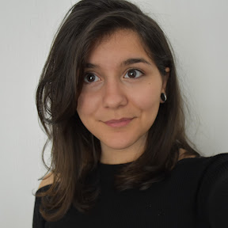

Bruna Alamia
UX/UI Junior Designer
brunaalamia@gmail.com
Experiences
-
2022-ongoing
UX/UI Junior Designer
@MUV B CORP
-
2022
Event facilitator
@Electronic Partecipatory Meeting (EPM)
-
2022
Host, organisator, coordinator
@Palermo Service Jam 2022
-
2022
Event planning assistant
@World Information Architecture Day (WIAD)
-
2021-2022
Design teaching assistant w/ professor Salvatore Di Dio
@University of Palermo (UNIPA)
-
2021
Winner of the Palermo Hackathon Round Two
@Easyrights
-
2021
Game Design intern
@PUSH. Design Lab
Education
-
2018-2022
BA in Industrial Design with honors
@University of Palermo (UNIPA)
-
2017-2018
Game Art Design
@Istituto Volta S.R.L.
-
2012-2017
Classical Gymnasium Diploma
@Liceo Classico Umberto I, Palermo